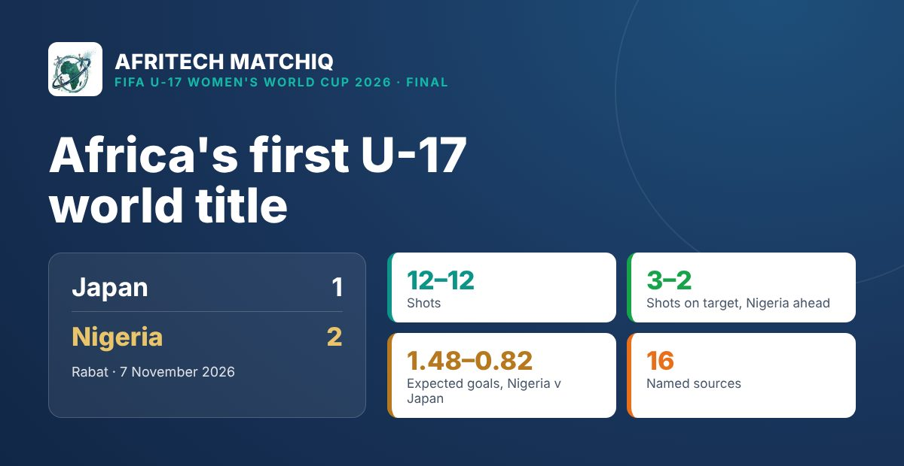

Nairobi · Football intelligence for AfricaNairobi · Intelligence football pour l’AfriqueNairobi · Ujasusi wa soka kwa AfrikaNairóbi · Inteligência de futebol para a África
Find the talent.Read the game.Run the tech.Trouver le talent.Lire le jeu.Faire tourner la tech.Pata vipaji.Soma mchezo.Endesha teknolojia.Encontre o talento.Leia o jogo.Faça a tecnologia funcionar.
Match reports, scouting dossiers, football CVs and player tracking for clubs, academies, agents and federations across Africa. Built in Nairobi, made to open on any phone, even with no signal.
Rapports de match, dossiers de recrutement, CV football et suivi des joueurs pour les clubs, académies, agents et fédérations d’Afrique. Conçus à Nairobi, lisibles sur n’importe quel téléphone, même sans réseau.
Ripoti za mechi, ripoti za uskauti, CV za soka na ufuatiliaji wa wachezaji kwa klabu, akademia, mawakala na mashirikisho kote Afrika. Zimetengenezwa Nairobi, zinafunguka kwenye simu yoyote, hata bila mtandao.
Relatórios de partida, dossiês de scouting, currículos de futebol e monitoramento de jogadores para clubes, academias, agentes e federações da África. Feitos em Nairóbi, abrem em qualquer celular, mesmo sem sinal.
MatchIQ · U-17 Women’s World Cup finalMatchIQ · finale Coupe du monde féminine U-17MatchIQ · fainali ya Kombe la Dunia U-17MatchIQ · final da Copa Feminina Sub-17
The scoreboardLe tableau d’affichageUbao wa matokeoO placar
New this weekNouveau cette semaineMpya wiki hiiNovidades da semana
Selected workTravaux choisisKazi teuleTrabalhos selecionados
Work you can open today.Du travail à ouvrir aujourd’hui.Kazi unayoweza kufungua leo.Trabalho para abrir hoje.
Every piece below is live and public. No mock-ups, no stock photos: the same reports, desks and CVs our clients receive.
Tout ce qui suit est en ligne et public. Pas de maquettes, pas de photos de banque d’images : les mêmes rapports, desks et CV que reçoivent nos clients.
Kila kazi hapa chini iko hewani na wazi kwa umma. Hakuna picha za kuigiza: ni ripoti, madawati na CV zile zile wanazopokea wateja wetu.
Tudo abaixo está no ar e é público. Sem maquetes, sem fotos de banco: os mesmos relatórios, mesas e currículos que nossos clientes recebem.

MatchIQ · U-17 finalMatchIQ · finale U-17MatchIQ · fainali U-17MatchIQ · final Sub-17
Nigeria 2–1 Japan, read goal by goal: player radars, where each game broke down, five dated next steps.Nigeria 2–1 Japon, but par but : radars des joueuses, où chaque jeu a cédé, cinq prochaines étapes datées.Nigeria 2–1 Japan, bao kwa bao: rada za wachezaji, mchezo ulipovunjika, hatua tano zenye tarehe.Nigéria 2–1 Japão, gol a gol: radares das jogadoras, onde cada jogo falhou, cinco próximos passos com data.
Tournament DeskDesk TournoiDawati la MashindanoMesa do Torneio
Africa’s ten nations at the FIFA U-17 World Cup, match by match, until 13 December.Les dix nations africaines à la Coupe du monde U-17, match après match, jusqu’au 13 décembre.Mataifa kumi ya Afrika Kombe la Dunia U-17, mechi kwa mechi, hadi 13 Desemba.As dez seleções africanas na Copa Sub-17, jogo a jogo, até 13 de dezembro.
CV DeskBureau CVDawati la CVMesa de Currículos
Football CVs for players, coaches, scouts and analysts, built to our standard.CV football pour joueurs, entraîneurs, recruteurs et analystes, à notre standard.CV za soka kwa wachezaji, makocha, maskauti na wachambuzi, kwa kiwango chetu.Currículos de futebol para jogadores, treinadores, olheiros e analistas, no nosso padrão.

From Footage to InsightFrom Footage to InsightFrom Footage to InsightFrom Footage to Insight
Live tagging of a real Kenyan match, with FootLab (Morocco).Annotation en direct d’un vrai match kényan, avec FootLab (Maroc).Kuwekea alama mechi halisi ya Kenya moja kwa moja, pamoja na FootLab (Morocco).Marcação ao vivo de uma partida real do Quênia, com a FootLab (Marrocos).

INSAIT JOYINSAIT JOYINSAIT JOYINSAIT JOY
Smart shin guards: every run, touch and kick, on the coach’s phone after the session.Protège-tibias connectés : chaque course, touche et frappe, sur le téléphone du coach.Vilinda-muundi janja: kila mbio, mguso na teke, kwenye simu ya kocha baada ya mazoezi.Caneleiras inteligentes: cada corrida, toque e chute, no celular do treinador.
What we doCe que nous faisonsTunachofanyaO que fazemos
Seven ways we help you win.Sept façons de vous aider à gagner.Njia saba za kukusaidia kushinda.Sete formas de ajudar você a vencer.
Evidence for every football decision, from the first scouting trip to the transfer paperwork.
Des preuves pour chaque décision football, du premier déplacement de recrutement aux papiers du transfert.
Ushahidi kwa kila uamuzi wa soka, kuanzia safari ya kwanza ya uskauti hadi nyaraka za uhamisho.
Evidências para cada decisão no futebol, da primeira viagem de scouting à papelada da transferência.
01Match analysis & MatchIQAnalyse de match & MatchIQUchambuzi wa mechi na MatchIQAnálise de partidas e MatchIQ
Know what happened, and what to do on Monday.
Savoir ce qui s’est passé, et quoi faire lundi.
Jua kilichotokea, na la kufanya Jumatatu.
Saiba o que aconteceu e o que fazer na segunda-feira.
OpenOuvrirFunguaAbrir- Pre-match briefs and post-match reportsBriefings d’avant-match et rapports d’après-matchMuhtasari kabla ya mechi na ripoti baada ya mechiBriefings pré-jogo e relatórios pós-jogo
- Interactive dashboards that open with no signalTableaux de bord qui s’ouvrent sans réseauDashibodi zinazofunguka bila mtandaoPainéis que abrem sem sinal
- Video tagging: every pass, shot and duel logged in NairobiAnnotation vidéo : chaque passe, tir et duel relevé à NairobiKuwekea video alama: kila pasi, shuti na pambano, NairobiMarcação de vídeo: cada passe, finalização e duelo, em Nairóbi
02Scouting dossiersDossiers de recrutementRipoti za uskautiDossiês de scouting
One player, one file, one clear verdict.
Un joueur, un dossier, un avis clair.
Mchezaji mmoja, faili moja, uamuzi mmoja wa wazi.
Um jogador, um arquivo, uma recomendação clara.
OpenOuvrirFunguaAbrir- Ratings, strengths and video evidenceNotes, points forts et preuves vidéoAlama, uwezo na ushahidi wa videoAvaliações, pontos fortes e evidências em vídeo
- Compared with players in the same positionComparé aux joueurs du même posteIkilinganishwa na wachezaji wa nafasi hiyoComparado com jogadores da mesma posição
- Eleven checks before a recruitment decisionOnze vérifications avant une décisionUkaguzi kumi na moja kabla ya uamuziOnze verificações antes de uma decisão
03CV DeskBureau CVDawati la CVMesa de Currículos
Be found by the clubs that matter.
Être trouvé par les clubs qui comptent.
Onekana na klabu zinazohusika.
Seja encontrado pelos clubes que importam.
OpenOuvrirFunguaAbrir- Players, coaches, scouts and analystsJoueurs, entraîneurs, recruteurs et analystesWachezaji, makocha, maskauti na wachambuziJogadores, treinadores, olheiros e analistas
- A short form on your phone, in four languagesUn court formulaire sur téléphone, en quatre languesFomu fupi kwenye simu, kwa lugha nneUm formulário curto no celular, em quatro idiomas
- Parents fill in the form for players under 18Les parents remplissent pour les moins de 18 ansWazazi wanajaza fomu kwa walio chini ya miaka 18Os pais preenchem para menores de 18 anos
04Player trackingSuivi des joueursUfuatiliaji wa wachezajiMonitoramento de jogadores
See how far and how fast your players really run.
Voir jusqu’où et à quelle vitesse vos joueurs courent vraiment.
Ona umbali na kasi halisi ya wachezaji wako.
Veja quanto e quão rápido seus jogadores realmente correm.
OpenOuvrirFunguaAbrir- INSAIT JOY smart shin guardsProtège-tibias connectés INSAIT JOYVilinda-muundi janja vya INSAIT JOYCaneleiras inteligentes INSAIT JOY
- Soccerbee GPS vests, benchmarked against peersGilets GPS Soccerbee, comparés aux pairsFulana za GPS za Soccerbee, zikilinganishwa na wenzaoColetes GPS Soccerbee, comparados com pares
- Chosen with you, set up at your ground, staff trainedChoisis avec vous, installés chez vous, staff forméTunachagua nawe, tunasimika uwanjani, tunafunza wafanyakaziEscolhidos com você, instalados no seu campo, equipe treinada
05Contracts, registration & transfersContrats, enregistrement & transfertsMikataba, usajili na uhamishoContratos, registro e transferências
Get paid for the players you develop.
Être payé pour les joueurs que vous formez.
Lipwa kwa wachezaji unaowakuza.
Seja pago pelos jogadores que você forma.
OpenOuvrirFunguaAbrir- Guidance from our sports lawyerLes conseils de notre avocat du sportUshauri kutoka kwa mwanasheria wetu wa michezoOrientação do nosso advogado esportivo
- Player contracts and registrationContrats et enregistrement des joueursMikataba na usajili wa wachezajiContratos e registro de jogadores
- Claiming FIFA training rewardsRéclamer les indemnités de formation FIFAKudai fidia ya mafunzo ya FIFAReceber as compensações de formação da FIFA
06Workshops & webinarsAteliers & webinairesWarsha na seminaWorkshops e webinars
Your staff, reading the numbers themselves.
Votre staff, qui lit les chiffres lui-même.
Wafanyakazi wako, wakisoma takwimu wenyewe.
Sua equipe lendo os números por conta própria.
OpenOuvrirFunguaAbrir- Free webinars for coaches, analysts and scoutsWebinaires gratuits pour entraîneurs, analystes et recruteursSemina za bure kwa makocha, wachambuzi na maskautiWebinars gratuitos para treinadores, analistas e olheiros
- Hands-on tagging and coding with FootLabAnnotation et codage pratiques avec FootLabMafunzo ya vitendo ya kuwekea alama pamoja na FootLabMarcação e codificação na prática com a FootLab
- Men’s and women’s game, across sub-Saharan AfricaFootball masculin et féminin, en Afrique subsaharienneSoka la wanaume na wanawake, Afrika kusini mwa SaharaFutebol masculino e feminino, na África subsaariana
07Tournament DeskDesk TournoiDawati la MashindanoMesa do Torneio
Your competition, covered like a World Cup.
Votre compétition, couverte comme une Coupe du monde.
Mashindano yako, yakifuatiliwa kama Kombe la Dunia.
Sua competição, coberta como uma Copa do Mundo.
OpenOuvrirFunguaAbrir- Every squad, every match, players scoredChaque effectif, chaque match, joueurs notésKila kikosi, kila mechi, wachezaji wakipewa alamaCada elenco, cada jogo, jogadores avaliados
- Commission a desk at any levelCommandez un desk à tout niveauAgiza dawati kwa kiwango chochoteEncomende uma mesa em qualquer nível
- Live now for the FIFA U-17 World CupEn direct pour la Coupe du monde U-17Hewani sasa kwa Kombe la Dunia U-17No ar agora para a Copa Sub-17
Three ways to startTrois façons de commencerNjia tatu za kuanzaTrês formas de começar
Pick your first move.Votre premier pas.Chagua hatua ya kwanza.Escolha o primeiro passo.
All three are low risk. See our work on your own match first, learn with us for free, or put one player under the microscope.
Les trois sont sans risque. Voyez notre travail sur votre propre match, apprenez gratuitement avec nous, ou passez un joueur au microscope.
Zote tatu hazina hatari. Ona kazi yetu kwenye mechi yako kwanza, jifunze nasi bure, au mchunguze mchezaji mmoja kwa kina.
As três têm baixo risco. Veja nosso trabalho na sua própria partida, aprenda com a gente de graça ou coloque um jogador no microscópio.
A free match readUne lecture de match gratuiteUchambuzi wa mechi bureUma leitura de partida grátis
- Send us the video of one of your matchesEnvoyez-nous la vidéo d’un de vos matchsTutumie video ya mechi yako mojaEnvie o vídeo de uma das suas partidas
- We send back a MatchIQ preview: key moments and three players to watchNous renvoyons un aperçu MatchIQ : moments clés et trois joueurs à suivreTunakurudishia muhtasari wa MatchIQ: matukio muhimu na wachezaji watatu wa kufuatiliaDevolvemos uma prévia MatchIQ: lances decisivos e três jogadores para acompanhar
- Opens on any phone, no app, no signal neededS’ouvre sur tout téléphone, sans appli ni réseauInafunguka kwenye simu yoyote, bila programu wala mtandaoAbre em qualquer celular, sem app e sem sinal
One per club · within 5 working daysUne par club · sous 5 jours ouvrésMoja kwa kila klabu · ndani ya siku 5 za kaziUma por clube · em até 5 dias úteis
Learn it with usApprenez avec nousJifunze nasiAprenda com a gente
- Live webinars with FootLab (Morocco)Webinaires en direct avec FootLab (Maroc)Semina za moja kwa moja na FootLab (Morocco)Webinars ao vivo com a FootLab (Marrocos)
- Real African matches tagged in front of youDe vrais matchs africains annotés devant vousMechi halisi za Afrika zikiwekewa alama mbele yakoPartidas africanas reais marcadas na sua frente
- Recordings of past sessionsLes enregistrements des sessions passéesRekodi za vipindi vilivyopitaGravações das sessões anteriores
Open link · no sign-upLien ouvert · sans inscriptionKiungo wazi · bila kujisajiliLink aberto · sem cadastro
One scouting dossierUn dossier de recrutementRipoti moja ya uskautiUm dossiê de scouting
- Ratings, strengths and video evidenceNotes, points forts et preuves vidéoAlama, uwezo na ushahidi wa videoAvaliações, pontos fortes e evidências em vídeo
- Eleven checks: pathway, records, fit, verificationOnze vérifications : parcours, dossiers, adéquation, vérificationUkaguzi 11: njia, kumbukumbu, ufanisi, uthibitishoOnze verificações: trajetória, registros, encaixe, verificação
- A clear verdict you can act onUn avis clair sur lequel agirUamuzi wa wazi unaoweza kuufanyia kaziUma recomendação clara para agir
Credited in full to a season package booked within 30 daysDéduit en totalité d’un forfait saison réservé sous 30 joursInahesabiwa kikamilifu kwenye kifurushi cha msimu ndani ya siku 30Abatido integralmente de um pacote de temporada fechado em 30 dias
Who we helpPour quiTunaowasaidiaQuem ajudamos
Who are you?Qui êtes-vous ?Wewe ni nani?Quem é você?
Tell us who you are and the right person at Afritech Sports replies, on WhatsApp or by email.
Dites-nous qui vous êtes et la bonne personne chez Afritech Sports vous répond, sur WhatsApp ou par e-mail.
Tuambie wewe ni nani na mtu sahihi wa Afritech Sports atakujibu, kwa WhatsApp au barua pepe.
Conte quem você é e a pessoa certa da Afritech Sports responde, no WhatsApp ou por e-mail.
Clubs and academiesClubs et académiesKlabu na akademiaClubes e academias
Find players and staff, read your matches, track your squad.
Trouvez joueurs et staff, analysez vos matchs, suivez votre effectif.
Pata wachezaji na wafanyakazi, chambua mechi zako, fuatilia kikosi chako.
Encontre jogadores e comissão técnica, entenda suas partidas, monitore seu elenco.
Players, coaches, scoutsJoueurs, entraîneurs, recruteursWachezaji, makocha, maskautiJogadores, treinadores, olheiros
Get a football CV built to our standard so clubs can find you.
Obtenez un CV football à notre standard pour que les clubs vous trouvent.
Pata CV ya soka iliyoandaliwa kwa kiwango chetu ili klabu zikupate.
Tenha um currículo de futebol no nosso padrão para os clubes encontrarem você.
Parents and schoolsParents et écolesWazazi na shulePais e escolas
Player records, CVs and tracking for young players and student teams.
Dossiers, CV et suivi pour les jeunes joueurs et les équipes scolaires.
Kumbukumbu, CV na ufuatiliaji kwa wachezaji vijana na timu za wanafunzi.
Históricos, currículos e monitoramento para jovens jogadores e equipes estudantis.
AgentsAgentsMawakalaAgentes
Scouting dossiers and match reports that help you place a player.
Dossiers de recrutement et rapports de match pour placer un joueur.
Ripoti za uskauti na za mechi zinazokusaidia kumpatia mchezaji klabu.
Dossiês de scouting e relatórios de partida que ajudam a colocar um jogador.
Federations and leaguesFédérations et liguesMashirikisho na ligiFederações e ligas
Match intelligence, match data and technology for teams and competitions.
Analyse, données de match et technologie pour sélections et compétitions.
Uchambuzi, data za mechi na teknolojia kwa timu na mashindano.
Inteligência de jogo, dados e tecnologia para equipes e competições.
Tech buyersAcheteurs de technologieWanunuzi wa teknolojiaCompradores de tecnologia
Smart shin guards and GPS vests, chosen with you and set up.
Protège-tibias connectés et gilets GPS, choisis avec vous et installés.
Vilinda-muundi janja na fulana za GPS, tunavichagua pamoja nawe na kuvisimika.
Caneleiras inteligentes e coletes GPS, escolhidos com você e instalados.

Our scouting methodNotre méthodeMbinu yetu ya uskautiNosso método
Beyond the scoreboard.Au-delà du score.Zaidi ya matokeo.Além do placar.
A strong performance tells you something. It does not tell you everything. Before we recommend a player, we run eleven checks, lined up like a team.
Une belle performance dit quelque chose. Elle ne dit pas tout. Avant de recommander un joueur, nous faisons onze vérifications, alignées comme une équipe.
Mchezo mzuri unakueleza kitu. Haukuelezi kila kitu. Kabla ya kupendekeza mchezaji, tunafanya ukaguzi kumi na moja, uliopangwa kama timu.
Uma grande atuação diz alguma coisa. Não diz tudo. Antes de recomendar um jogador, fazemos onze verificações, escaladas como um time.

ListenÉcouterSikilizaOuça
Deep Dive Into Soccer.Deep Dive Into Soccer.Deep Dive Into Soccer.Deep Dive Into Soccer.
Our podcast takes African football apart, in your language: a separate episode in English, French, Swahili and Portuguese.
Notre podcast décortique le football africain dans votre langue : un épisode distinct en anglais, français, swahili et portugais.
Podikasti yetu inachambua soka la Afrika kwa lugha yako: kipindi tofauti kwa Kiingereza, Kifaransa, Kiswahili na Kireno.
Nosso podcast destrincha o futebol africano no seu idioma: um episódio próprio em inglês, francês, suaíli e português.
Why AfritechPourquoi AfritechKwa nini AfritechPor que a Afritech
African football has the talent. What it is missing is the evidence. That is the gap we close, one match, one player and one club at a time.Le football africain a le talent. Ce qui lui manque, ce sont les preuves. C’est ce vide que nous comblons, un match, un joueur et un club à la fois.Soka la Afrika lina vipaji. Kinachokosekana ni ushahidi. Hilo ndilo pengo tunaloziba, mechi moja, mchezaji mmoja na klabu moja kwa wakati.O futebol africano tem o talento. O que falta são as evidências. É essa lacuna que fechamos, uma partida, um jogador e um clube de cada vez.
How we workNotre façon de travaillerJinsi tunavyofanya kaziComo trabalhamos
Four steps. No surprises.Quatre étapes. Aucune surprise.Hatua nne. Hakuna mshangao.Quatro passos. Sem surpresas.
Kick-offCoup d’envoiMwanzo wa mchezoPontapé inicial
Your next decision deserves evidence.Votre prochaine décision mérite des preuves.Uamuzi wako ujao unastahili ushahidi.Sua próxima decisão merece evidências.
Advisory Services, Nairobi, KenyaServices de conseil, Nairobi, KenyaHuduma za Ushauri, Nairobi, KenyaConsultoria, Nairóbi, Quênia
Andrew Rukidi · LinkedIn
PodcastPodcastPodikastiPodcast